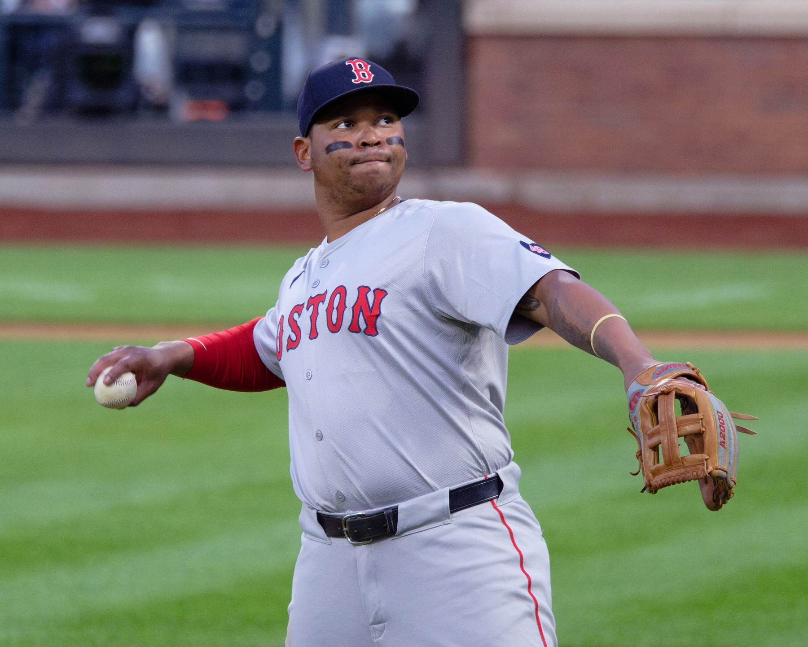

Royals 5, Giants 4: We Finally Took a Lead, and It Lasted Half an Inning
Landen Roupp was excellent. The offense finally woke up in the seventh. Then the bottom of the seventh happened, again, and the Giants left Kansas City swept, losers of five straight, and sitting at 42-60.

Here is the cruelest part, and I want to be honest about it before I start yelling: this was the best the Giants have played in a week. Landen Roupp went six innings, gave up four hits and two runs, struck out seven, and looked like an actual major league starter doing an actual major league job. The lineup finally scratched. We took the lead. On the road. In the seventh inning. And it survived for about eleven minutes.
Roupp deserves the top of this column because nights like his are the only currency this franchise has left. Seven strikeouts. Four hits over six. One mistake that Kansas City turned into a run, and otherwise he just kept walking off the mound with the game right there. Two runs through six on the road with a rotation held together with tape, and he gets absolutely nothing for it. That is the 2026 Giants in one line: our starter does his job, and it does not matter.
We were shut out through five. Seth Lugo had us again, the same way half the league has had us since the break, and the sixth is when it finally cracked. Luis Arraez lifted a sacrifice fly, 2-1, a run without a hit, which honestly felt like a miracle. Then the seventh, and for one inning it was the team I keep telling myself is still in there. Jung Hoo Lee ripped a triple into the gap and drove in a run. Willy Adames doubled and drove in another. Rafael Devers laced a double. Three-two Giants, on the road, six outs from ending the skid.
And then it went exactly the way you already know it went. Salvador Perez, who has been beating up National League teams since before some of our roster could drive, put one out to tie it, the 317th of his career and the one that matched the Royals franchise record. Of course it came against us. Then Lane Thomas got a two-run single to right-center and it was 5-3 and the air went out of the whole thing. Three batters, three runs, the lead gone, another seventh inning that undid an entire night of work.
Joey Vitello got run in the middle of it arguing a safe call at first base on a Vinnie Pasquantino double, and you know what, good. Somebody should have been furious. Pasquantino has now hit in seventeen straight, which is a nice sentence for Kansas City and a horrible one for us, because he did most of that damage while we watched. When your manager getting ejected is the most competitive thing that happens in an inning, the season is telling you something.
We did get one last punch. Casey Schmitt, two outs in the ninth, took Steven Cruz deep for a solo shot to make it 5-4. Cruz got the last out and his first career save. So the final line reads like a one-run loss, which is fitting, because that is what this whole stretch has been: close, competent, and completely losing. Three games in Kansas City, three losses, by scores of 4-3, 3-2 and 5-4. We were in every single one of them. We won none of them.
That is a sweep. That is five in a row. That is 42-60, eighteen games under, with the deadline eleven days out and a front office that has to stop pretending there is a version of this that plays into October. There is not. Sell. Get something real back. Let Bryce Eldridge and the kids find out what August feels like.
Thursday is an off day, which this team has earned in the way a bad tooth earns a dentist. Then the Dodgers come into Oracle Park on Friday, and I will be in front of the TV like always, because that is what we do. Roupp gave us six good ones and Schmitt went deep with two outs down two. It was not enough. It has not been enough since April. But they are still ours.
More coverage: Giants section · Columns · Bay Area Sports Blog home